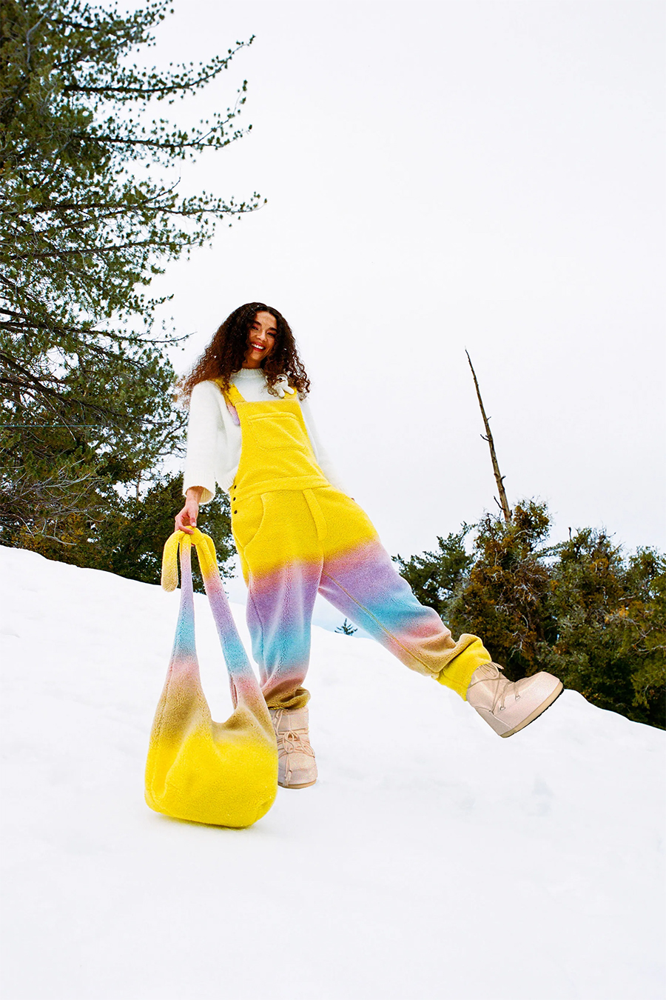

Our brands showcase exceptional female & male fashion designers who are as passionate about contemporary craftsmanship, uniqueness, genuine values, integrity, and longevity as we are. Each piece we assemble in our store tells a unique story and is meant to bring long-lasting joy to its wearer.
